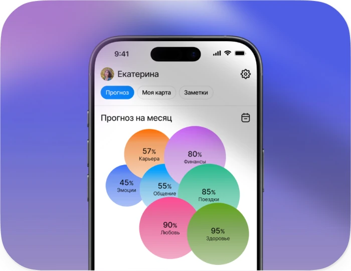

Прогноз на месяц
Middle Product Designer (design owner)
2025
UI/UX, Прототипирование, Дизайн система

Результат
Около 400 тыс. ₽ выручки за первую неделю
Результаты фичи за первую неделю после релиза
- 4,9/5
- оценка полезности пользователями
- 91,4%
- удержание >10 сек после загрузки
- 10-12%
- Конверсия paywall → тариф
- 7
- возвращений к функции
в среднем
Продукт
Chronos Plus — PWA с подпиской для заботы о себе, аудиторией около 20 000 MAU.
Сервис переводит астрологические расчёты
в понятные рекомендации по семи жизненным сферам и входит в экосистему Chronos. Монетизация строилась на трёх тарифах: месяц, полгода и год.
Вызов и проблема
В астрологических сервисах есть устоявшийся паттерн: прогноз на день, на месяц, на год.
В Chronos Plus пользователи могли читать ежедневные тренды по семи сферам, но сводной картины на месяц не было — общая ситуация оставалась для них неочевидной.
Для бизнеса задача состояла в том, чтобы увеличить долю длительных подписок: чем дольше пользователь остаётся в продукте,
тем выше выручка и шансы на апсейл внутри экосистемы.
Гипотеза
Если показать пользователям общую картину на ближайшие месяцы, это повысит активацию в подписку для триальщиков и мотивирует текущих подписчиков переходить на более длительные тарифы.
JTBD пользователя
«Я хочу быстро понять, чего ждать в ближайшие месяцы: где быть осторожнее, а где действовать активнее, без сложных графиков и терминов».
Решение
Мы запустили «Прогноз на месяц» — фичу, которая показывает несколько месяцев вперёд в рамках тарифа и делает подписку инструментом планирования, а не разовой покупки.
Процесс и ключевые решения
Выбор визуального формата
В исходном брифе предлагалось использовать «колесо баланса». Формально оно подходило, но для заботы о себе-сценария выглядело слишком аналитично и требовало лишнего усилия при чтении. Я провёл дизайн-эксплорейшн и подготовил 4–5 вариантов: от более строгих графиков до «воздушных» концепций.
При разработке концепции я увидел, что для self-care-продукта ключевым критерием выбора формата должно быть не столько точное отображение данных, сколько эмоциональное ощущение от диаграммы — чувство поддержки и спокойствия. Это стало основой, на которой я аргументировал выбор в обсуждениях с продактом
и дизайн-лидом.
В итоге мы остановились на концепции «парящих сфер» — визуальной схеме, выстроенной в последовательный поток. Однако решение не было окончательно закрыто: к нему возвращались с альтернативами, поэтому выбранный подход я каждый раз заново обосновывал не на уровне вкуса, а через ценность для пользователя и бизнес-цели.
Проценты: сомнения
и валидация
Отдельный вопрос вызвали проценты гармоничности. В команде уже обсуждали, что пользователи не всегда до конца понимают проценты в повседневном сценарии, и сомнение возникло снова. Вместо того чтобы закрывать его на уровне мнения, я отдельно поднял тему с продактом и запросил данные по похожей фиче на главной — «Потенциал дня».
Мы увидели, что проблема не в самих числах, а в подаче: проценты считываются нормально, если встроены в контекст, сопровождаются текстовыми пояснениями и не остаются «голыми числами». Поэтому показатель сохранили, но усилили контекстом и визуальной иерархией — теперь он стал восприниматься как часть общей картины.
Взаимодействие с разработкой и техническая валидация
Сроки проекта требовали учитывать скорость реализации, и первоначально рассматривался вариант со статичными пресетами — без изменяющихся размеров для сфер. Я предложил сначала свериться с разработкой, прежде чем отказываться от динамики.
Компромисс
Скорость и предсказуемость реализации —
в обмен на ощущение персонального,
естественного прогноза
На созвоне фронтенд-разработчик подтвердил, что динамический вариант в целом реализуем и по трудозатратам не выглядит критично. Мы зафиксировали направление и продолжили работу с макетами. Я собрал анимированный прототип в Figma, чтобы команда и разработка увидели желаемое поведение интерфейса: появление пузырьков, изменение размеров, переходы между месяцами.
Уже ближе к финализации другой фронтенд-разработчик, который взял задачу в работу, вернулся с сомнениями в реализуемости такой механики. Я собрал проверочный прототип на HTML Canvas, который подтвердил: шары могут масштабироваться из фиксированных центров в заданных направлениях, не перекрывая контент соседних элементов. Это позволило сохранить динамику «парящих сфер» без перехода к статичным пресетам.
Сохранение рекомендаций в заметки
Паттерн сохранения рекомендаций уже работал в ежедневных прогнозах и получал положительный отклик от пользователей. Мы перенесли его в «Прогноз на месяц»: пользователь видит общую картину, получает рекомендации по сферам и может сохранить важное, чтобы вернуться к этому позже.
Это замыкало цикл взаимодействия: прогноз > рекомендация > действие > возврат. Заметки превращали прогноз из разового чтения в небольшой личный план и усиливали ощущение контроля над месяцем.
Монетизация и компромисс
Продакт пришёл ко мне с вопросом, как лучше встроить монетизацию в новый сценарий. Среди вариантов рассматривался более насыщенный подход — несколько рекламных вставок прямо внутри текста прогноза. Я предложил сократить рекламную нагрузку: для формата прогноза несколько вставок могли ухудшить ритм чтения, ослабить восприятие ценности контента и снизить вовлечённость.
Параллельно я проработал сам баннер — заголовок, подзаголовок и визуальное оформление — и определил его позицию в структуре экрана. Баннер встал на границе между двух смысловых секций. В начале прогноза он ощущался бы навязчиво и выбивал из контекста, в конце — часть пользователей уже не дошла бы до него. Середина давала естественную паузу: читатель завершил один смысловой блок и переключается на следующий.
В итоге в первой версии мы выбрали более сдержанный сценарий: оставили один ненавязчивый баннер, а основной акцент перенесли на момент ограничения тарифа. Он срабатывал, когда пользователь пытался открыть следующий месяц или выйти за пределы текущего плана. Так сценарий поддерживал и первую покупку, и апсейл, не разрушая ощущение цельного и персонального прогноза.
Детали решения и
UX-инсайты
Точка входа
Отдельным вопросом было, где разместить переход между дневным и месячным прогнозом. Я рассмотрел несколько вариантов: закреплённый переключатель «День / Месяц», плавающую кнопку и CTA-баннер в начале блока событий.
Переключатель оказался самым устойчивым решением: он виден сразу при входе, остаётся связанным с основным сценарием и может масштабироваться, если в будущем появятся другие горизонты прогноза — например, неделя или год. Плавающая кнопка была заметнее, но выглядела менее системно; баннер проще в реализации, но быстро терял релевантность после первого использования.
Навигация по месяцам
Я спроектировал кастомный Smart-календарь для выбора месяцев: он был нужен как способ быстро перескакивать на более дальние периоды, когда последовательное пролистывание становилось слишком медленным.
Параллельно я добавил и простой дублирующий контроль — стрелки «вперёд / назад» под диаграммой — как базовый путь для большинства пользователей
Факт
Стрелками пользовались примерно в 3 раза чаще, чем календарём.
Инсайт
Даже удачный кастомный компонент проигрывает привычному микро-паттерну, если тот позволяет действовать быстрее и без лишних решений.
Долгая загрузка: как мы работали с ожиданием
Генерация прогноза ИИ могла занимать до 40 секунд — критическая зона отвала. На раннем этапе я обсуждал вопрос с продактом: можно ли заранее подгружать результаты — хотя бы для текущего месяца — чтобы первое прикосновение к фиче было быстрым? Ответ удалось получить не сразу: вопрос оставался открытым до финальных этапов, когда разработка подтвердила,
что предзагрузка для первого прогноза реализуема.
Это сократило время ожидания на старте и снизило вероятность отвала до того, как пользователь вообще увидит результат.
Для последующих прогнозов я заложил сценарий ожидания: динамические тексты и лёгкая анимация, объясняющие процесс генерации, а не просто сигнализирующие о нём. Параллельно были продуманы состояния на случай сбоя или таймаута — чтобы пользователь понимал следующий шаг и не оставался в пустоте.
Метрика вовлеченности измерялась после загрузки и отражает фактический интерес пользователей к результату.
Факт
91,4% пользователей проводили на экране более 10 секунд.
Что получилось и зачем мы это делали
Мы хотели упростить для пользователей основной сценарий взаимодействия с прогнозами: чтобы они могли удобнее изучать события, лучше планировать месяц и быстрее замечать риски и точки роста в разных сферах жизни.
При этом «Прогноз на месяц» не должен был заменять ежедневные сценарии. Он работал как сводка трендов по семи сферам: пользователь получал общий горизонт на месяц, но возвращался в приложение за деталями — событиями, ежедневными прогнозами, рекомендациями и натальной картой. Так фича добавляла новый повод вернуться, не вытесняя привычное взаимодействие с продуктом.
В работе над фичей я учитывал и ранее выявленные пользовательские проблемы, и бизнес-цели продукта. Запуск дал результат выше ожиданий: выручка в первую неделю после анонса составила около 400 000 ₽, а гипотезы по пользовательскому опыту подтвердились в открытых ответах обратной связи.
Спустя 10 месяцев
Продакт подтвердил, что сценарий продолжает работать стабильно: больше всего оплат приходит не с баннера внутри прогноза, а с заглушки недоступного месяца. За период с января по апрель было 62 оплаты: 9 пришли с баннера, остальные — с попытки открыть недоступный период.